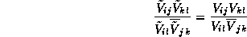
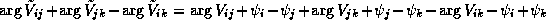
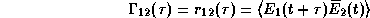
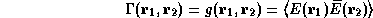
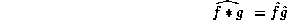

News
News
| Getting Started | Documentation | Glish | Learn More | Programming | Contact Us |
|
| VERSIONID |
News
|
C
C++
Catalog
CD-ROM
celestial equator
celestial sphere
cell-averaging
cell size
chromatic aberration
chromaticity
Clark CLEAN
class
class developer
class interface
CLEAN
CLEAN beam
CLEAN component
CLEAN image
CLEAN speedup factor
CLEAN window
CLI
client-server
clipping
closure amplitude
Closure Object
closure phase
CMYK
coherence
color contour
color triangle
command line interpreter
compression
conjugate symmetry
Constructor
control hub
convolution theorem
coprocessor
correlator offset
crash
cross correlation
cursor
A programming language designed by Dennis Ritchie at AT&T Bell Labs ca. 1972 for systems programming on the PDP-11 and immediately used to rewrite Unix. It was called "C" because many features derived from an earlier compiler named "B" in commemoration of its parent, BCPL. Before Bjarne Stroustrup developed C++, there was a humorous debate over whether C's successor should be named "D", or "P" (following B and C in "BCPL").
C is terse, low-level and permissive. Partly due to its distribution with Unix, C became widely used outside Bell Labs after 1980 and has grown popular due to its simplicity, efficiency, and flexibility. C is sometimes described, with a mixture of fondness and disdain, as "a language that combines all the elegance and power of assembly language with all the readability and maintainability of assembly language".
The original C, known as "K&R C" after B. W. Kernighan and D. R. Ritchie's book [The C Programming Language, Prentice-Hall (1978, 1988)], has been standardized (and simultaneously modified) as ANSI C (X3.159 Programming Language C - published December 7 1988).
An object-oriented superset of C developed primarily by Bjarne Stroustrup at AT&T Bell Laboratories in 1986.
In AIPS++, the Catalog system will track high level objects such as MeasurementSets, Image, etc. that the user has created to store results in. An ObjectID is the fundamental identifier of a catalogued, or any persistent, object.
Compact Disc Read-Only Memory: A data storage medium using the same physical format on 4.72-inch disk as audio compact discs. CD-ROM is popular for the distribution of large databases and of software, especially multimedia applications. The maximum capacity is about 600 Mbytes. ISO 9660 defines a standard file system. Formats used for CD-ROM data include:
The great circle on which the Earth's equatorial plane would, if extended, intersect the celestial sphere.
A sphere of large but finite radius centered on the Earth, on which celestial objects may be considered to reside when assigning celestial co-ordinates such as right ascension and declination.
In radio interferometer imaging, gridding convolution is
achieved simply by averaging the visibility data which lie in each u-v
grid cell. This is equivalent to use of a
gridding convolution
function equal to the characteristic function of the rectangle
|u| <  u/2,
|v| < v/2,
where
u and
v
denote the grid spacing. That is, it is equivalent to the use of a
so-called pillbox function. The Fourier transform of the
pillbox gridding convolution function is proportional to a separable
product of two sinc(x) functions; this function does not
decay rapidly enough to yield very effective
aliasing suppression. The zero-order
spheroidal functions offer much better aliasing suppression, at
somewhat increased computational expense (equivalent to averaging the
data over a region 36 times larger, in the case of the default gridding
convolution function used by the Classic AIPS imaging tasks).
u/2,
|v| < v/2,
where
u and
v
denote the grid spacing. That is, it is equivalent to the use of a
so-called pillbox function. The Fourier transform of the
pillbox gridding convolution function is proportional to a separable
product of two sinc(x) functions; this function does not
decay rapidly enough to yield very effective
aliasing suppression. The zero-order
spheroidal functions offer much better aliasing suppression, at
somewhat increased computational expense (equivalent to averaging the
data over a region 36 times larger, in the case of the default gridding
convolution function used by the Classic AIPS imaging tasks).
In radio interferometer imaging, the size
u,
v of
the u-v grid cells. Ordinarily, the visibility data are
smoothed by an appropriate
gridding convolution
function and this convolution then is sampled at the coordinate
locations of the centers of the grid cells. After appropriate weighting,
the
discrete Fourier transform
yields the dirty image.
u and
v are chosen according to
Shannon's sampling theorem:
if the size of the dirty image is to be
X radians by Y radians, then
u = 1/X wavelengths and
v = 1/Y wavelengths.
1. In optics, the variation with wavelength of the focal length of a refractive lens, which causes the images formed by the lens at different wavelengths to differ both in position and in scale (magnification).
2. In imaging with radio interferometers, any wavelength-dependence of the point spread function that may limit the image quality under a particular data-reduction strategy. One example is bandwidth smearing of continuum observations, when the reduction strategy is a simple (spatially-invariant) deconvolution. Another is the dependence of the synthesized beam (both the FWHM and the sidelobe structure) on frequency in a spectral-line observation, if not fully accounted for in the data reduction.
In visual perception, essentially the dominant wavelength and the purity of the spectral distribution of light, as perceived. Hue and saturation determine the chromaticity, which is independent of intensity.
The C.I.E. chromaticity diagram is a two-dimensional diagram devised in 1931 by the Commission Internationale de l'Eclairage (International Commission on Illumination) to show the range of perceivable colors as a function of normalized chromaticity coordinates (x,y), under standardized viewing conditions. The color, for an additive mixture of monochromatic red, green, and blue (R,G,B denoting the intensities at 650, 520, and 380 nm. wavelengths) as perceived by a 'standard observer', is displayed in this diagram as a function of the normalized chromaticity coordinates x=R/(R+G+B) and y=G/(R+G+B).
Other chromaticity diagrams can be drawn for different choices of primary hues, for mixtures of polychromatic light, or for "nonstandard observers". In digital imagery, such a diagram may be tailored to a particular color image display unit.
A modified version of the
Högbom CLEAN algorithm, devised
by Barry Clark in order to accomplish an efficient
array processor implementation of
CLEAN (see B.G.Clark, An efficient implementation of the
algorithm CLEAN, Astron. Astrophys., 89 (1980)
377-378). To operate on, say, an n×n image,
the original CLEAN algorithm requires on the order of n arithmetic operations at each iteration, and typically there may be
hundreds or thousands of iterations. The Clark algorithm proceeds by
operating not on the full residual image, but rather by picking out only
the largest residual points, iterating on these for a while (during its
"minor cycles" or inner iterations) and only occasionally (at the "major
cycles") computing the full n×n residual
image, by means of the
FFT algorithm. After each
major cycle, it again picks out the largest residuals and goes into more
minor cycles. And, for further economy, during these inner iterations
the dirty beam is assumed to be identically zero outside of a relatively
small box (termed the beam patch) which is centered about the origin.
arithmetic operations at each iteration, and typically there may be
hundreds or thousands of iterations. The Clark algorithm proceeds by
operating not on the full residual image, but rather by picking out only
the largest residual points, iterating on these for a while (during its
"minor cycles" or inner iterations) and only occasionally (at the "major
cycles") computing the full n×n residual
image, by means of the
FFT algorithm. After each
major cycle, it again picks out the largest residuals and goes into more
minor cycles. And, for further economy, during these inner iterations
the dirty beam is assumed to be identically zero outside of a relatively
small box (termed the beam patch) which is centered about the origin.
The prototype for an object in an object-oriented language; analogous to a type in a procedural language. A class may also be considered to be a set of objects which share a common structure and behavior. The structure of a class is determined by the variables which represent the state of an object of that class and the behavior is given by a set of methods, or member functions, associated with the class. The collection of methods in a class defines its interface.
Classes are related in a class hierarchy. One class may be a specialization (a "subclass") of another or it may be composed of other classes or it may use other classes in a client-server relationship.
In C++ a class is a user-defined type, syntactically a struct with member functions. Constructors and destructors are member functions called to create or destroy individual objects.
A programmer who develops classes.
In object-oriented programming, a class may be accessed only through a well defined set of functions. This interface ensures that the class is manipulated only in predetermined (safe) ways. This situation is different from manipulating a traditional structure or record, which has to rely on conventions for ensuring that it remains valid. See also encapsulation.
A deconvolution algorithm initially introduced in radio astronomy by Jan Högbom (Astron. Astrophys. Suppl. Ser. 15 (1974), 417-426). For details, see Högbom CLEAN, Clark CLEAN, Steer-Dewdney-Ito CLEAN, CLEAN beam, CLEAN component, CLEAN image, CLEAN speedup factor, CLEAN window.
In the Högbom CLEAN or Clark CLEAN algorithms, an elliptical Gaussian function h with which the final iterate is convolved, in order to diminish any spurious high spatial frequency features. Also also termed restoring beam. h is specified by its major axis (usually the FWHM), its minor axis, and the position angle of its major axis. Usually these parameters are set by fitting to the central lobe of the dirty beam.
See also super-resolution.
In the Högbom CLEAN
algorithm, a  -function component
which is added to the (n-1)'st
iterate in order to obtain the n'th iterate. Its location is
the location of the peak residual after the
(n-1)'st iteration, and its amplitude is a specified
fraction m (the loop gain)
of the largest residual.
-function component
which is added to the (n-1)'st
iterate in order to obtain the n'th iterate. Its location is
the location of the peak residual after the
(n-1)'st iteration, and its amplitude is a specified
fraction m (the loop gain)
of the largest residual.
An approximate deconvolution of the dirty beam from the dirty image, derived by an application of the Högbom CLEAN algorithm or one of its derivatives, such as the Clark CLEAN algorithm.
In the Clark CLEAN algorithm, a number in the range [-1,1] used in determining when to end a major cycle. A smaller value causes a larger number of major cycles to occur (at greater computational expense) but yields a result closer to that of the Högbom CLEAN algorithm.
in the Högbom CLEAN algorithm, the region A of the residual image which is searched in order to locate the CLEAN components comprising the successive approximants to the radio source brightness distribution. In most implementations, A is a union of rectangles, called CLEAN boxes, which may be specified by the user.
Generally the user should specify a clean window whenever it is possible to make a reasonably valid and restrictive estimate of the support of the true radio source brightness distribution. At the termination of the algorithm, it is prudent to examine a display of the residual image for the presence of large residuals outside the clean window; their presence may imply that an inappropriate window was selected.
A software partitioning paradigm in which a distributed system is split between one or more server tasks which accept requests, according to some protocol, from (distributed) client tasks, asking for information or action. There may be either one centralized server or several distributed ones. This model allows clients and servers to be placed independently on nodes in a network.
Examples are the file-server/file-client relationship in NFS and the screen server/client application split in the X Window System.
The discarding of data whose amplitudes exceed, or fall below, some threshold value, or the discarding of data whose differences from some tentative model are too large, or too small, in amplitude.
Assume that the visibility observation on the i-j baseline (i<j) is given by

where V is the true visibility and where the g's are the antenna/i.f. gains. If we ignore the additive error, then, for certain combinations of (at least four) baselines, one may form ratios of observed visibilities (and their conjugates)--- including each visibility only once---in such a manner that the g's cancel one another. For example, if i<j<k<l, then:

The modulus of such a ratio is termed a closure amplitude (and its argument, a closure phase).
Closure amplitude is called a "good observable", since, under the above assumptions, it is not sensitive to measurement error. The closure amplitude and closure phase relations are exploited in the hybrid mapping algorithm. Also see self-calibration.
A Glish idiom for providing encapulsation.
Assume that the visibility observation on the i-j baseline i<j is given by
where V is the true visibility and where the g's
are the antenna/i.f. gains. If we ignore the additive error, then, for
a combination of any three or more baselines forming a closed
loop, one may sum the visibility phases in such a manner that the
antenna/i.f. phases  drop out.
drop out.
For example, if i<j<k, then

Such linear combinations of observed visibility phases are termed a closure phase.
Closure phase is called a "good observable", since, under the above assumptions, it is not sensitive to measurement error. The closure phase relations are exploited in the hybrid mapping algorithm. Also see closure amplitude and self-calibration.
A system for describing colors by giving the quantity of each secondary color (cyan, magenta, yellow), along with the "key" (black). The CMYK system is used for printing. It is better to use these secondary colors when mixing pigments, as pigments mix subtractively instead of additively. Although black could be obtained by mixing CMY in equal proportions, in four-color printing it always has its own ink; hence the CMYK model. The K stands for "Key' or 'blacK,' to avoid confusion with the B in RGB).
In physical optics, the term used to describe either the temporal or spatial correlation of two wave disturbances.
The mutual coherence function
( )
of two wave fields
E
)
of two wave fields
E (t) and
E(t)
is the same as their temporal cross correlation
r():
(t) and
E(t)
is the same as their temporal cross correlation
r():

The spatial coherence function
(r,r) of a wave field E
is the same as its spatial autocorrelation
g(r,r):

The spatial autocorrelation of the wave field from distant, extended but spatially incoherent astronomical sources depends only on the separation
r-r
and not on the absolute locations r or r where the wave field is sampled. The spatial autocorrelation function can be estimated from measurements made with correlation-type radio interferometers: it differs from the visibility function that is sampled by a real interferometer only through the effects of the
primary beam attenuation and the spatial averaging performed by finite-sized antennas.
A color digital image display of a real-valued function f of two real variables (x,y), in which the color assignment (the hue) is a coarsely quantized function of f(x,y). The visual effect of this type of pseudo-color display, in the case when f is continuous, is similar to the traditional sort of contour display. One sees curves along which f is constant, separated by swathes of constant hue---the boundary between each hue traces a distinct quantization level.
Any three non-collinear points plotted on a chromaticity diagram determine a color triangle. Since the points are non-collinear, they correspond to basic, or primary hues. All of those colors on the chromaticity diagram which fall within the triangle determined by the three points may be produced by addition of the three hues.
A program by which an end user can perform interactive calculations (for example, whole-array arithmetic) and/or start application programs, by typing commands in a line or lines as if working at a text-based terminal.
The re-encoding of data to save storage space or transmission time by using fewer bits, with or without some loss of information. For example, run-length encoding replaces strings of repeated characters (or other units of data) with a single character and a count. There are many compression algorithms and utilities. Compressed data must be decompressed before it can be used.
See also TIFF, JPEG, MPEG, and Lempel-Ziv Welch compression, or the WWW listings on the Technical Information About Compression page at Ascent Solutions Inc., or the M.I.T. list of Frequently Asked Questions about Compression at ftp://rtfm.mit.edu/pub/usenet/news.answers/compression-faq/.
That property which characterizes a Hermitian function.
Since each of the radio brightness distributions distributions I(x,y), Q(x,y), U(x,y), and V(x,y) representing Stokes' parameters is real-valued, their Fourier transforms, the Stokes' visibility functions, have conjugate symmetry:
 ,
,
 ,
,
 , and
, and
 .
.
This symmetry is implicitly assumed whenever one speaks of the u-v coverage corresponding to a radio interferometric observation.
In AIPS++, an instance of a tool is made or constructed by a special type of global function called a constructor.
In C++, a function provided by a class to instantiate an object, i.e. to name and initialize it. A class may also have a destructor function to destroy objects of that class.
In AIPS++, a central process which is a repository for centralized configuration information. It is also responsible for starting and stopping other processes, and for mediating communications among them.
This theorem is well-known, but seldom is quoted in its distributional form: for two distributions, f and g, the Fourier transform of the convolution of f and g is given by

whenever one distribution is of compact support and the other is a tempered distribution. (Loosely speaking, a tempered distribution is one which does not increase too rapidly at infinity.) See Y.Choquet-Bruhat, C.Dewitt-Morette, and M.Dillard-Bleick, Analysis, Manifolds, and Physics, North-Holland, New York, 1977, ch. VI.
One ought to be aware of this form of the theorem, since often one must deal with convolution of functions that are not of compact support--- dirty beams, principal solutions, invisible distributions, etc.--- whose Fourier transforms do not exist as ordinary functions, but only as distributions or generalized functions.
Convolution of distributions, itself, is defined, in general, whenever the support of either distribution is compact, or (in one dimension) when the supports of both distributions are limited on the same side. For distributions which are absolutely integrable ordinary functions, and whose Fourier transforms possess the same property, the compact support assumption is not required here, or above. Related fact: convolution is not always associative (i.e., f*(g*h) is not equal to(f*g)*h), in general), but it is associative provided that all the distributions, with the possible exception of one, are of compact support. See the above-cited reference.
Any computer processor which assists the main processor by performing special tasks faster than they can be executed by software running in the main processor. A coprocessor often decodes instructions in parallel with the main processor and executes only those intended for it. The most common example is a floating-point coprocessor, others are used for graphics and for networking.
A basic assumption of much interferometer calibration software (e.g., the self-calibration algorithm) is that the systematic errors in the visibility measurements are multiplicative errors that are ascribable to individual array elements and their associated i.f./l.o. chains, and that---at a given instant---each such antenna-based error has an identical effect on each visibility observation involving that antenna/i.f. combination. Systematic measurement errors which do not conform to this model are called correlator offsets or non-closing errors. See antenna/i.f. gain.
Correlator offsets can be the limiting factor in obtaining high dynamic range images from radio interferometers. Some observers have reported fairly large multiplicative correlator offsets which vary slowly with time and which do not appear to vary with the phase tracking center or with source structure. From observations of an external calibrator, one may estimate, and compensate for, such offsets.
The abrupt failure of a computer system or program. More specifically, a system crash is the abrupt failure of a computer--- or of a computer's operating system---causing the computer to halt the execution of programs; and a program crash is the abrupt failure of a computer program resulting either from a flaw in the logic of the program itself, or from some peculiar interaction with the operating system, the storage management facility, another program, or the user---or from an act of God.
A hardware crash (e.g., a disk crash) is a crash which results from the failure of the computer electronics or electro-mechanics, and a software crash is one which results from a flaw or an inadequacy in program logic, or in operating system program logic.
A soft crash is a crash from which it is easy to recover--- i.e., to restart the computer and resume work. A hard crash is the opposite.
The cross correlation function r of two real signals a(t) and b(t) is
where the angle bracket represents the ensemble (statistical) average.
1. (text): a marker on an interactive computer screen indicating the position where the next character is to be typed, inserted or deleted.
2. (graphics): on a graphics display device, a marker whose position, usually controlled by a mouse, may be sensed by the computer.
You could now go back to the:
Copyright © 1995,1996,1999,2000 Associated Universities Inc., Washington, D.C.
abridle@nrao.edu, 15 August 1996, 16:25 EDT